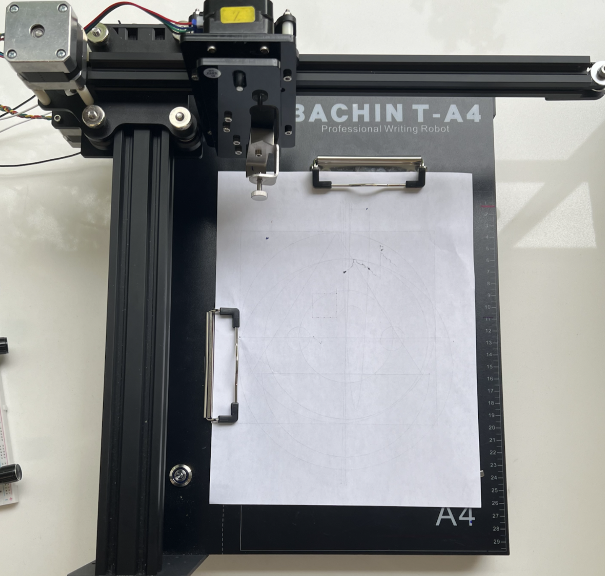
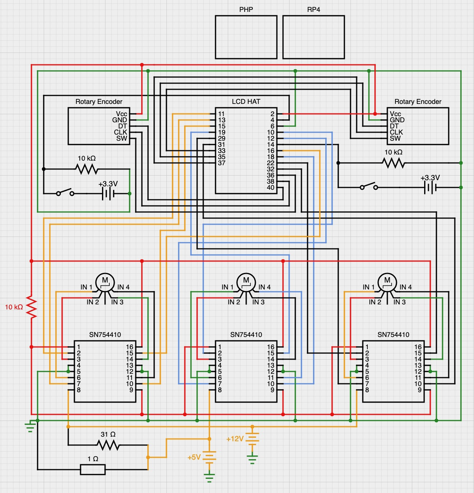

2D Plotter
Design Methodology Course Project
Overview
Description
Four month long project that involved a team of five engineering students, tasked with building a functional 2D plotter, including its circuitry and software using a Raspberry Pi (RP4).
- Acted as lead software engineer, but worked closely with the circuitry team to design a cohesive product.
- Constructed 14 efficient Python classes with clear organization, consistent naming, and optimized for RP4 performance. Continuous development improved accuracy by 35%. }
- Developed the user interface and functionality of the plotter to adhere to strict requirements set by the instructors.
Design Concepts
- Threads
- Python Classes
- Hardware and Software implementation of ADC
- Hardware I/O Interface (Motors, Encoders, Display, GPIO, etc.)
- Custom PCB Design
Features
- Etch-A-Sketch Mode: Draw freely using external rotary encoders
- Calibrate Mode: Manual or automatic calibration to determine position on plotter
- Math Mode: Plot linear, quatratic, and circle functions with variable coefficients
- G-Code Mode: Read a G-Code file to draw a pre-programming sequence
- Custom Power Supply that converts 24V input to +/- 12V output, with integrated heat dissipation
- Accurate power usage reading using a custom ADC
Pictures



